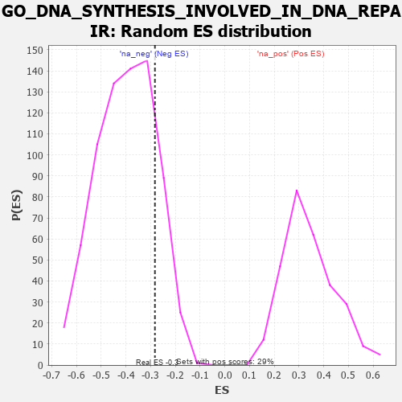

| | | Dataset | 7d |
| Phenotype | NoPhenotypeAvailable |
| Upregulated in class | na_neg |
| GeneSet | GO_DNA_SYNTHESIS_INVOLVED_IN_DNA_REPAIR |
| Enrichment Score (ES) | -0.28291914 |
| Normalized Enrichment Score (NES) | -0.7079793 |
| Nominal p-value | 0.83076924 |
| FDR q-value | 1.0 |
| FWER p-Value | 1.0 |
Table: GSEA Results Summary
 Fig 1: Enrichment plot: GO_DNA_SYNTHESIS_INVOLVED_IN_DNA_REPAIR
Fig 1: Enrichment plot: GO_DNA_SYNTHESIS_INVOLVED_IN_DNA_REPAIR
Profile of the Running ES Score & Positions of GeneSet Members on the Rank Ordered List
| PROBE | GENE SYMBOL | GENE_TITLE | RANK IN GENE LIST | RANK METRIC SCORE | RUNNING ES | CORE ENRICHMENT | | 1 | WRN | | | 469 | 0.649 | 0.0082 | Yes |
| 2 | RFC2 | | | 488 | 0.635 | 0.0716 | Yes |
| 3 | RFC3 | | | 663 | 0.571 | 0.1088 | Yes |
| 4 | RFC4 | | | 815 | 0.528 | 0.1444 | Yes |
| 5 | RPA1 | | | 817 | 0.527 | 0.1987 | Yes |
| 6 | RPA2 | | | 851 | 0.519 | 0.2483 | Yes |
| 7 | POLH | | | 1983 | 0.307 | 0.1378 | No |
| 8 | DTL | | | 2154 | 0.284 | 0.1458 | No |
| 9 | REV1 | | | 3104 | 0.136 | 0.0406 | No |
| 10 | RFC5 | | | 3389 | 0.091 | 0.0143 | No |
| 11 | RFC1 | | | 3437 | 0.085 | 0.0172 | No |
| 12 | SPRTN | | | 3651 | 0.051 | -0.0043 | No |
| 13 | REV3L | | | 5051 | -0.209 | -0.1586 | No |
| 14 | POLK | | | 6041 | -0.486 | -0.2327 | No |
| 15 | UBB | | | 6090 | -0.503 | -0.1867 | No |
| 16 | ISG15 | | | 6385 | -0.608 | -0.1608 | No |
| 17 | UFD1 | | | 7157 | -1.040 | -0.1502 | No |
| 18 | SYCP1 | | | 7295 | -1.167 | -0.0468 | No |
| 19 | UBC | | | 7410 | -1.274 | 0.0705 | No |
Table: GSEA details [plain text format]

Fig 2: GO_DNA_SYNTHESIS_INVOLVED_IN_DNA_REPAIR: Random ES distribution
Gene set null distribution of ES for GO_DNA_SYNTHESIS_INVOLVED_IN_DNA_REPAIR